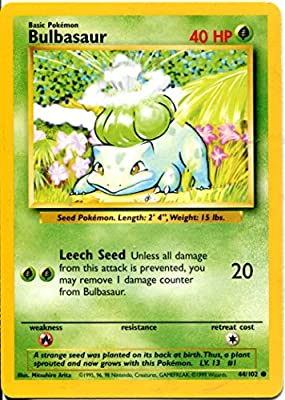
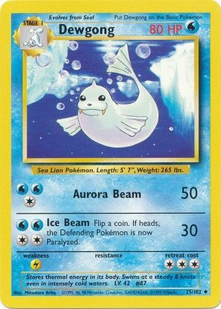

Info on the time rotation Ill call base sets or base
About
now base sets have very lower stats, because over time stats grow adn older cards fall out of play. But they can be also be bad, just generally. i.e. bulbasaur, very low stats, well just in generally base starter stats are very low, but regardless i can show you the card itself.

And a evolved pokemon would be better in play, well it was very easy to knock out a basic at 30, 40, 50 HP. well, here's an evolved card.

so you can imagine how good a strong basic would be. mayby a strong, good typed, high HP.
WELL WHAT IF THERE WAS A TRIO OF THOES CARDS! Yep a trio, well a duo untill jungle. Hitmonchan, electabuzz and syther.
A fighting, electric and grass type respecticly
(what?, but syther is a bug type. Well colecting that much energy would be so hecktic so they murged some types into others, and bug to grass was one of them.)
Haymaker
Haymaker, an iconic deck. the winner of many compitition (well, raindance and stall were there)
So the idea of haymaker is to RECK your oponents with great type match ups, before they can elolve they're pokemon.
The deck can be set in to play very quick because hitmonchan, electabuzz and syther being basics. (this was gen 1, electavire and scizor wern't there yet)
well. haymaker has two forms, 1 with hitmonchan and electabuzz in pure base set and the said pair plus syther, being jungle/fossil onward. also, rotation's didn't exist yet.
Haymaker Decks
Pure Base Set Haymaker
- Pokemon
- 4x hitmonchan
- 3x Electabuzz
- 2x farfech'd
- 1x doduo
- 1x diglett
- 1x chansey
- Trainers
- 4x Bill
- 4x Professor Oak
- 3x Gust of wind
- 3x Scoop Up
- 3x Energy Retrieval
- 3x Item Finder
- 2x Super Energy Removal
- 2x PlusPower
- 2x Lass
- Energy
- 9x Fighting Energy
- 7x Lightning Energy
- 2x Double Colorless Energy
Jungle Haymaker
- Pokemon
- 3x hitmonchan
- 3x Electabuzz
- 3x Syther
- 1x chansey
- Trainers
- 4x Bill
- 4x PlusPower
- 4x Energy Removal
- 3x Super Energy Removal
- 3x Professor Oak
- 3x Gust Of Wind
- 3x Energy Retrieval
- 3x Item Finder
- 2x Scoop Up
- 2x Computer Search
- 2x lass
- 1x switch
- Energy
- 8x Fighting Energy
- 6x Lightning Energy
- 2x Double Colorless Energy